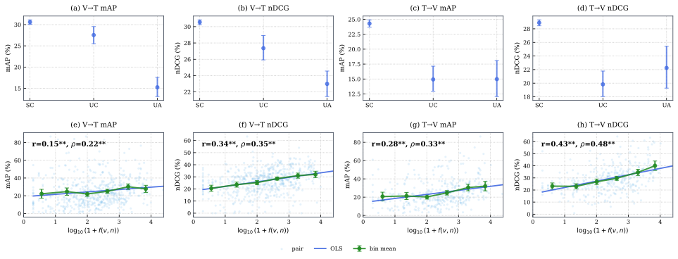

EGOCENTRIC VIDEO–TEXT RETRIEVAL
Better Retrieval,
Not Better Binding
Pretraining Exposure in Egocentric Video Retrieval
Ego-ExBind
TL;DR
Finding the right video does not necessarily mean understanding the action. We introduce Ego-ExBind, a diagnostic protocol that links pretraining exposure to tests of verb–noun binding. Using EgoVLPv2 on EPIC-KITCHENS-100, we show that retrieval can improve without stronger binding between an action and its object.
EVERYDAY ACTIONS / EPIC-KITCHENS-100
The object matters. So does the action.

EPIC-KITCHENS-100 examples
Exposure-associated retrieval gains do not necessarily imply stronger verb–noun binding.
PAPER OVERVIEW / MODEL AND DATA
Looking beyond the retrieval score
Video–language models can retrieve relevant videos, but retrieval scores alone do not establish whether they distinguish the correct action–object combination. We study this gap using an existing pretrained model and benchmark, tracking what appeared in pretraining and testing verbs and nouns separately.
EVALUATION DATA
EPIC-KITCHENS-100
First-person videos of everyday kitchen activities, annotated with verbs and nouns. We evaluate video-to-text and text-to-video retrieval on 9,668 EK100-MIR queries, alongside controlled caption comparisons that test binding.
PRETRAINED MODEL
EgoVLPv2, pretrained on EgoClip
EgoVLPv2 supplies the video and text encoders. EgoClip supplies the pretraining narrations used to build our exposure ledger. The pretrained encoders stay frozen; diagnostic experiments train lightweight adapters and, for exposure reweighting, a bias network.
EgoVLPv2, EgoClip and EPIC-KITCHENS-100 are existing research resources. Ego-ExBind contributes the diagnostic protocol and analyses, not a new backbone or newly collected video dataset.
CONTRIBUTION 01 / DIAGNOSTIC PROTOCOL
Track exposure. Test the action–object match.
Our exposure ledger counts verbs, nouns and their combinations in EgoClip. Binding probes then compare a correct caption with alternatives that change only the object or only the action. Together, they separate pretraining familiarity from measured verb–noun discrimination.

Exposure ledger
Verb, noun and verb–noun pair frequencies are mapped from EgoClip narrations into the EK100 taxonomy. Seen and unseen are defined relative to this pretraining corpus.
Binding probes
Keep the verb fixed and swap the noun; keep the noun fixed and swap the verb. Compare each alternative with the correct caption using similarity margins and accuracy.
CONTRIBUTION 02 / EXPOSURE AND RETRIEVAL
Familiar combinations are easier to retrieve
The 9,668 EK100 retrieval queries are grouped by what appears in the EgoClip exposure ledger. Within seen combinations, higher pair frequency is associated with better zero-shot retrieval, even after controlling for individual verb and noun frequencies.
- Seen Composition SC
- 8,648
- Unseen Composition UC
- 713
- Unseen Atom UA
- 307
Pair observed in pretraining
Verb and noun observed, but not together
Verb or noun absent from the ledger

Pair exposure predicts retrieval beyond the marginal frequencies of individual verbs and nouns. These are associations, not interventions on pretraining data.

CONTRIBUTION 02 / VERB–NOUN BINDING
Stronger noun binding, not stronger verb binding
Does familiarity help the model distinguish both the object and the action? On 8,592 eligible seen-composition probes, higher pair exposure is associated with stronger noun binding, but not stronger verb binding. Better retrieval therefore does not tell the whole story.
A margin is the similarity of the correct caption minus that of its swapped alternative. Positive values favour the correct caption.

CONTRIBUTION 02 / TRAINING-TIME INTERVENTIONS
Target the action. Protect the object.
Can targeted training close the gap? We test verb-focused hard negatives and a separate line of noun-protected, exposure-decorrelated adaptation. These are diagnostic interventions, not separate model contributions: each tests whether retrieval gains come with stronger binding.
SHARED BASELINE
Frozen EgoVLPv2 → Domain adaptation
Train zero-initialised video and text residual adapters with the EK100 retrieval objective. Keep the pretrained encoders frozen.
BRANCH A / VERB DISCRIMINATION
Add verb-focused hard negatives
Keep the noun and replace the verb: “cut onion” versus “wash onion”. Add the negative to its video-to-text training comparison while retaining the base retrieval objective.
BRANCH B / NOUN PRESERVATION
Anchor scores and protect noun margins
Start from the domain-adapted reference. Combine similarity anchoring with noun-margin protection, then vary the exposure-decorrelation penalty.
Similarity anchoring
Penalise changes to the video–text similarity matrix relative to the domain-adapted reference, limiting global score drift.
Noun-margin protection
Penalise a mean noun margin below a chosen floor. This is a soft training penalty, not a guarantee that noun discrimination is preserved.
Exposure decorrelation
Penalise squared batchwise Pearson correlation between noun margins and log-scaled pair exposure. Sweep weights 0, 1, 50 and 100; this does not directly target the verb channel.
| Setting | mAP AVG | Noun margin | Verb margin |
|---|---|---|---|
| Domain adaptation | 31.99 | 0.054 | 0.078 |
| Verb-HN, λ = 0.50, final | 33.33 | 0.079 | 0.091 |
| Anchor + noun protection, λd = 0 | 32.02 | 0.055 | 0.077 |
Selected settings, not the full ablation sweep. Anchor + noun protection values are means over three random seeds. The hard-negative row uses the final checkpoint, not the development-selected checkpoint. All binding margins shown here use the large seen-composition probe.
Local improvement is not full binding repair. Hard negatives improve verb discrimination relative to domain adaptation, but the noun margin remains below the frozen baseline of 0.222. Anchoring and protection do not restore that baseline, and stronger exposure decorrelation does not consistently improve retrieval or binding.
CONTRIBUTION 03 / CONTROLLED EXPOSURE TEST
Better retrieval, without stronger binding
Can exposure information alone change the ranking? After jointly training adapters and an exposure-bias network with the pretrained encoders frozen, we hold the entire trained checkpoint fixed. At inference, we replace only the exposure input and measure retrieval and binding again.
- 01 / TRAINFit adapters and exposure bias
- 02 / FIXKeep the trained checkpoint unchanged
- 03 / REPLACEOriginal, zeroed or shuffled exposure
- 04 / COMPARERetrieval scores and binding margins
Original
Each caption retains its true exposure vector.
Zeroed
Every caption receives the same zero exposure input.
Shuffled
Exposure vectors are reassigned across captions.
| Condition | mAP | nDCG |
|---|---|---|
| Zeroed | 32.91 | 43.04 |
| Original | 33.70 +0.79 | 44.22 +1.18 |
| Shuffled | 32.56 | 42.80 |
Changes in the Original row are percentage-point differences from Zeroed. T→V rankings remain unchanged by construction.
| Condition | SC | UC |
|---|---|---|
| Zeroed | 33.94 | 26.14 |
| Original | 34.97 +1.03 | 24.51 −1.63 |
| Shuffled | 33.56 | 26.15 |
Relative to Zeroed, true exposure improves SC retrieval but reduces UC retrieval.
| Condition | Noun | Verb |
|---|---|---|
| Zeroed | 0.058 | 0.065 |
| Original | 0.058 | 0.064 |
| Shuffled | 0.058 | 0.064 |
Binding margins remain essentially unchanged at the reported precision.
Zeroed is the base ranking of the jointly trained checkpoint, not the original frozen zero-shot baseline.
BETTER RETRIEVAL ≠ BETTER BINDING
Correct exposure information can change retrieval rankings without a corresponding improvement in compositional binding.
This evidence concerns a fixed-checkpoint scoring pathway, not a change to the pretraining corpus.EGO-EXBIND
Explore the research.
Exposure ledger, retrieval evaluation, binding probes and diagnostic interventions.